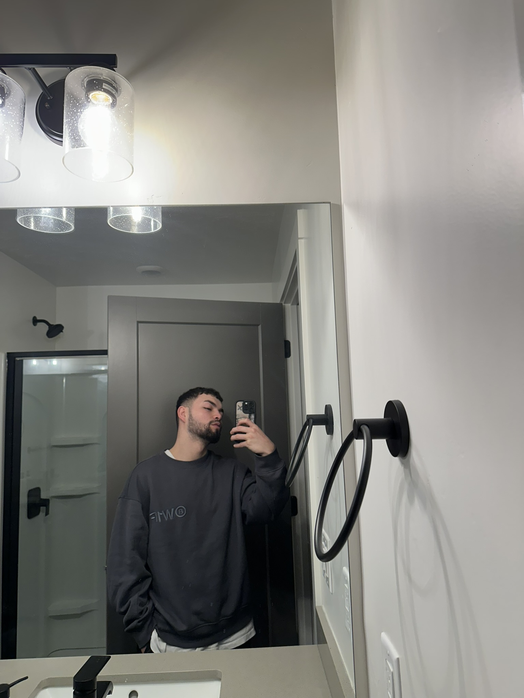

Projects
Colombia Chamber
At the heart of my first project is a dynamic website that aims to attract international tourists to Colombia. The site will be a one-stop resource, providing essential information on where to stay, what to see, and how to experience Colombia in ways that align with any budget..
Design Rules
I built a page that showcases design rules and illustrates how top companies, including Microsoft and Apple, apply these principles to engage and attract customers.
Interactive List Creation
In today's digital landscape, effective data management is key. In this project, I developed an intuitive interface using Visual Studio, enabling users to effortlessly add and remove items on a webpage. This versatile component can be seamlessly integrated into any website, whether serving as a shopping cart, a wish list, or simply a space for quick notes.
Progressive Loading of Images
Optimizing the loading speed of website images is crucial for a seamless user experience. In this project, I implemented a progressive loading strategy for five images, each configured with specific parameters. This approach ensures that as users access the page, they are presented with fully rendered visuals instead of blank placeholders—enhancing both the perceived performance and overall impression of the site.
Data Tables
Data tables serve as an effective means of presenting organized information, enabling users to easily visualize how data structures or budgetary allocations vary based on specific parameters. In this project, I developed an interactive data table using Visual Studio, HTML, and CSS, empowering users to explore the information and draw their own conclusions.
Using APIs in Websites
APIs are essential tools in modern web development, providing users with dynamic, real-time data that enhances their online experience. In this project, I integrated a third-party API to deliver current weather information. The data is presented through a streamlined information box, allowing users to quickly access and benefit from up-to-date weather updates.
Temple Chamber Project
The Temple Chamber Project is designed to promote a hotel chain located near the temples of the Church of the Saints of the Last Days. The website features several interactive elements, enabling users to submit their contact information directly to the hotel representatives and explore the diverse services offered by the chain. With a strong focus on user engagement and a commitment to maintaining sound design principles, I incorporated a voting section that allows visitors to “like” the temple that resonates with them the most. This interactive component not only personalizes the experience but also enhances overall user engagement.
Detalles Adicionales
Colombia Chamber Overview
Colombia Chamber is a project designed to capture attention towards a unique destination. Its primary goal is to showcase my proficiency in modern web development techniques. The project integrates real-time weather APIs to provide up-to-date environmental information and utilizes JavaScript to offer dynamic content visualization—allowing users to explore data through interactive graphs or detailed lists.
Detalle 2
Otra explicación complementaria...
Acerca de mí
I am a passionate creator committed to continuously shaping innovative ideas and projects throughout my life. I earned a certificate in web design and computer programming from Brigham Young University and further refined my skills by studying 2D and 3D animation at a renowned institution. This portfolio offers a window into my creative and technical process, showcasing the evolution of my work and expertise.
Contacto
¿Tienes un proyecto en mente o deseas colaborar? Escríbeme a correo@example.com.